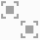

Working with Site Viewer
In the Site Viewer you can filter the list of panels by name or part of the name, and you can sort it by event severity. To better represent the architecture of your site, with an appropriate permission, you can rename the panels and also group them together in meaningful collections represented by a single graphic symbol. You can also select one or more panels and then operate on System Manager and Event List on the selected set to see status information and start control actions.
Filter the Site Viewer by Name
- In the Search by description field of the Site Viewer, enter any part of the panel description you want to display.
- The Site Viewer view is updated and only displays the panels whose description contains the text you entered.
Sort the Site Viewer by Alarm Status
- In the Site Viewer, click Sort by Alarm Status .
- The Site Viewer view is updated and sort the panels according to the severity and acknowledge status of pending events.
NOTE: Click Sort by Alarm Status again to sort the panel alphabetically (default).
Show Properties and Commands of a Panel from the Site Viewer
- In the Site Viewer, double-click a panel.
- The panel properties and commands display in the Contextual pane.
- Select the Extended Operation tab to access the extended set of control commands.
Display Filtered Event List
- Select one or more panels in the Site Viewer.
- Click Enable Event List interactions .
- The Event List displays, filtered according to the Site Viewer selection.
Hide Filtered Event List
- Click Disable event list interactions to remove the Site Viewer filter.
- In the Summary bar, click Close Event List
 .
.
Group Panels
- You are enabled to configure the Site Viewer (User Application Rights).
- In the Site Viewer, click Edit mode
 .
. - Select the panels you want to group. Hold CTRL key pressed when you click the panels to allow for a multiple selection.
- Click Group .
- In the dialog box that opens, enter the group Description.
- The new group panel displays. Next to it, a dashed-line frame shows the panels that belong to the group.
- Click Edit mode again to quit edit mode.
Expand/Collapse a Group
- In the Site Viewer, double-click a collapsed group to expand it.
- The panels that belong to the group display in the Site Viewer. They are represented by slightly smaller panels that display next to the group panel within a dashed-line frame.
- Double-click the group again to collapse it.
- The panels that belong to the group disappear from the Site Viewer.
Ungroup Panels
- You are enabled to configure the Site Viewer (User Application Rights).
- In the Site Viewer, click Edit mode .
- Select the panel of the group you want to remove.
- Click Ungroup

. - The group panel disappears.
- Click Edit mode again to quit edit mode.
Remove a Single Panel from a Group
- You are enabled to configure the Site Viewer (User Application Rights).
- In the Site Viewer, click Edit mode .
- If the group is collapsed, expand it by double-clicking the group panel.
- Select the panel you want to remove.
- Click Ungroup .
- The group is updated.
- Click Edit mode again to quit edit mode.
Rename a Panel from the Site Viewer
- You are enabled to configure the Site Viewer (User Application Rights).
- In the Site Viewer, click Edit mode .
- Select the panel you want to rename and press F2.
- Enter the new name.
- Click Edit mode again to quit edit mode.